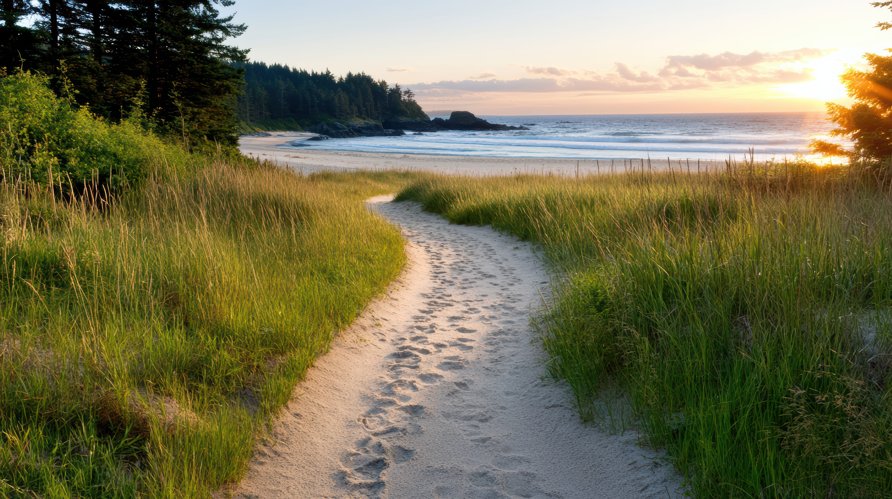
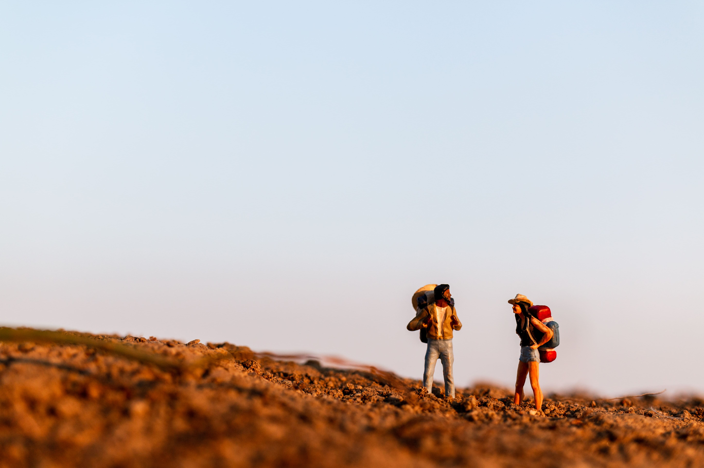

Our Story
Nestled along the rugged coastline of Northern California, Pacific Trails Resort was created with a simple vision: to offer a peaceful escape where guests can reconnect with nature without sacrificing comfort. What began as a small retreat has evolved into a destination known for its breathtaking views, warm hospitality, and unforgettable outdoor experiences.
Our Mission
Our mission is to create meaningful experiences that bring people closer to the outdoors. Whether you are hiking along scenic coastal trails, kayaking through calm ocean waters, or enjoying a quiet morning in your private yurt, every moment is designed to help you relax, recharge, and explore.
What Makes Us Different
- Eco-conscious and sustainable practices
- Luxury yurts with modern amenities
- Guided outdoor adventures and activities
- Personalized guest experiences
- Stunning ocean and forest views


Experience the Outdoors
At Pacific Trails Resort, adventure is always just steps away. Guests can explore miles of hiking trails, join guided bird watching tours, or paddle along the coastline with our kayaking experiences. Each activity is designed to immerse you in the natural beauty that surrounds our resort.
A Place to Unwind
After a day of exploration, return to a peaceful environment where comfort meets nature. Enjoy quiet evenings under the stars, wake up to ocean views, and experience a level of relaxation that only a true retreat can offer.